Our Team
We're a diverse group of researchers working to understand how brain architecture supports cognitive function through the continuous interaction of genes and environment. Our team brings together expertise in neuroimaging, computational modeling, clinical neuroscience, and social cognition.
Interested in joining us for a short or longer while? We welcome trainees and collaborators who are curious about multi-scale brain organization, biosocial approaches to neuroscience, and bridging from microstructure to behavior. We particularly value diverse perspectives that help us understand brain organization beyond traditional WEIRD samples. Please get in touch with Sofie at valk [at] cbs [dot] mpg [dot] de or s [dot] valk [at] fz-juelich [dot] de
Team Structure
Our work is organized into three synergistic research groups that bridge themes and scales:
Precision Imaging and Social Health
Co-led by Dr. Jessica Royer
This group investigates how ultra-high resolution structural features relate to social cognition and environmental context. We're particularly interested in understanding how the social environment shapes brain architecture and how individual differences in brain organization relate to social functioning.
Clinical Neuroimaging and Lifespan Models
Co-led by Dr. Clara Weber
This group develops translational approaches to understand brain organization across development, aging, and clinical populations. We aim to build models that integrate multi-scale brain data to understand cognitive trajectories and mental health across the lifespan.
Computation and Methods Development
Co-led by Dr. Amin Saberi
This group creates advanced analytical tools to integrate multi-scale neurobiological data and model brain dynamics. We develop computational approaches that link microstructural organization to network dynamics and behavior, accounting for non-linear relationships across biological scales.
Lab Members
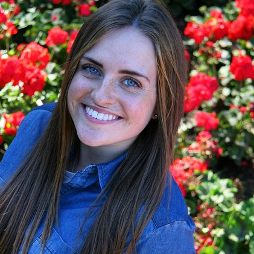
Anika Schlorhauer
Lab manager
Anika is our organizing hero and studies to become a psychotherapist
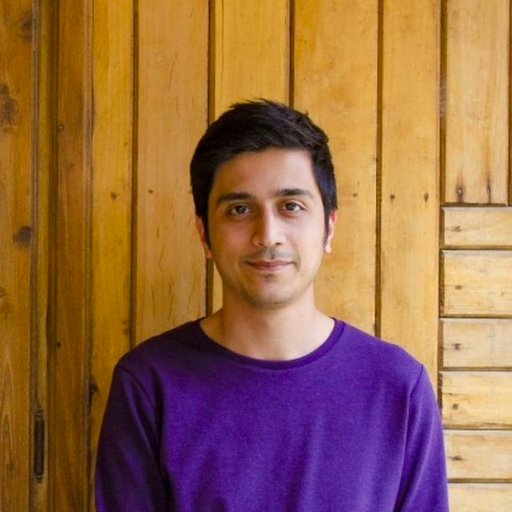
Amin Saberi
Postdoc (pre-defence)
Amin studies the link between excitation-inhibition and cortical structure, and their development in typically developing adolescents and those at higher risk for psychopathology.
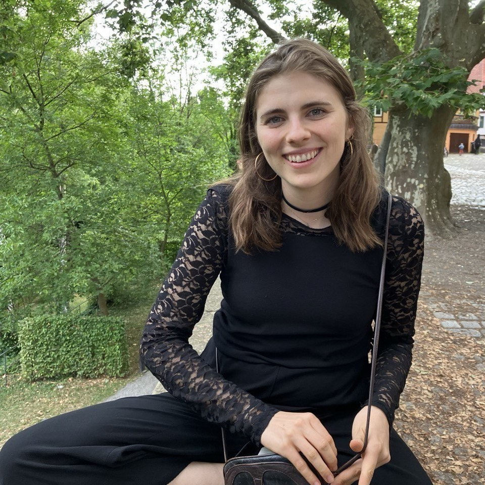
Sarah Sobotta
PhD candidate, IMPRS
Sarah is a PhD student with a background in neuroscience and social sciences. In her research, she aims to explore how social and environmental factors affect brain development.
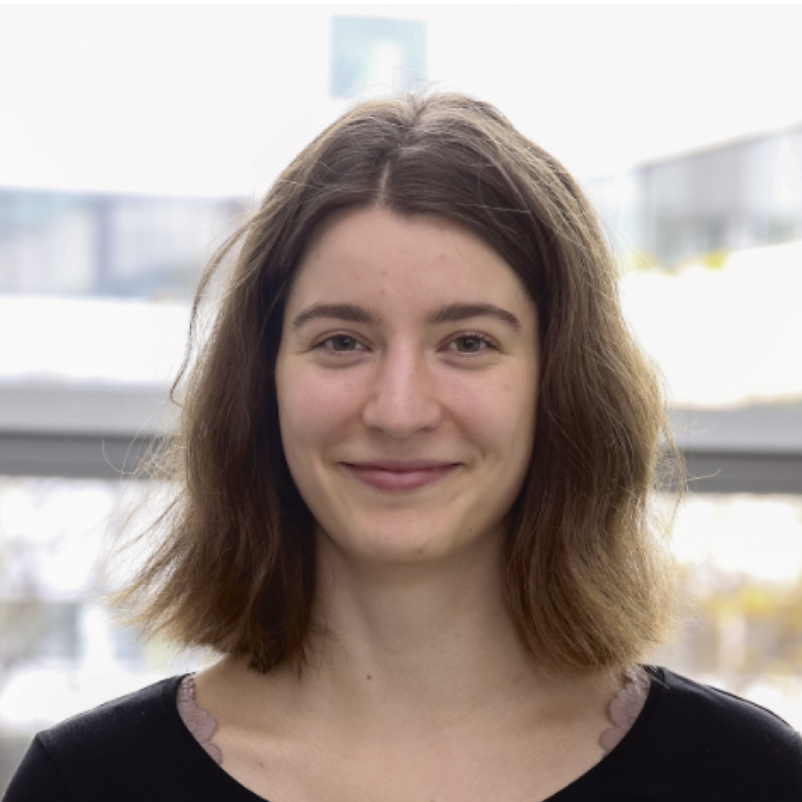
Caroline Jantzen
PhD candidate, IMPRS
Caroline is physicist and studying brain dynamics. She is currently drafting her PhD proposal.
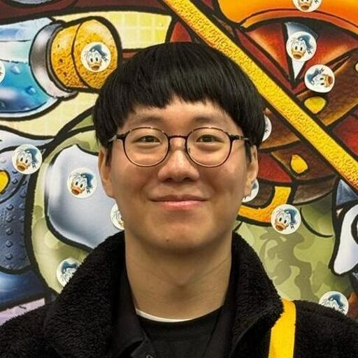
JiHoon Kim
PhD candidate, IMPRS
JiHoon is studying the structure and function of the prefrontal cortex
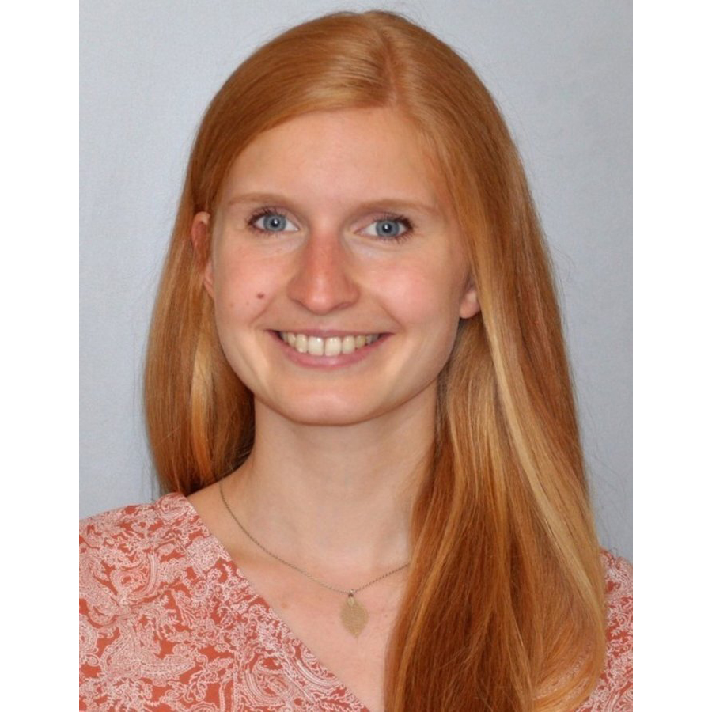
Meike Hettwer
Postdoc
Meike is a PhD student at Max Planck School of Cognition. Her work aims to understand how brain organization shapes resilience and vulnerability in mental health, in the larger context of transdiagnostic psychiatry and network-based pathology.
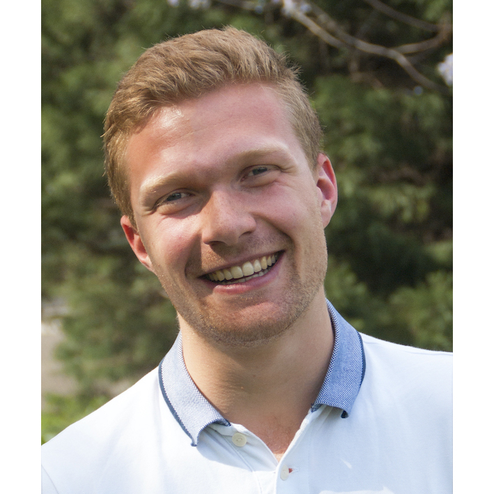
Neville Magielse
PhD candidate, pre defense
Neville studies the cerebellum from different perspectives, by looking at cerebellar evolution and functional imaging.
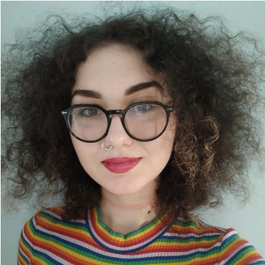
Katerina Manoli
PhD candidate, Studienstiftung
Katerina studies the role of the developing and adult cerebellum in social cognition, and more specifically in Theory of Mind. She focuses on structural and functional connectivity between the cerebellum and the cerebral cortex, as well as the effect of cerebellar maturation on the early-life emergence of Theory of Mind.
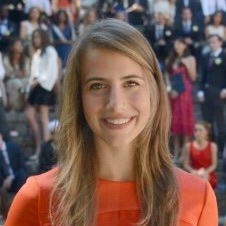
Bianca Serio
PhD candidate, School of Cognition
Bianca is a PhD student at the Max Planck School of Cognition. She studies sex differences and the effects of sex hormones on brain organization, with a particular interest in how these factors relate to emotion and affective disorders.

Alex John
PhD candidate, IMPRS
Alex found her interest in the thalamus, its structural connectivity with the cortex, and its role of orchestrating whole-brain activity. Additionally, with her background in biology, she likes to think about how to translate macroscale findings at the systems-level to the biological underpinnings at the microscale.
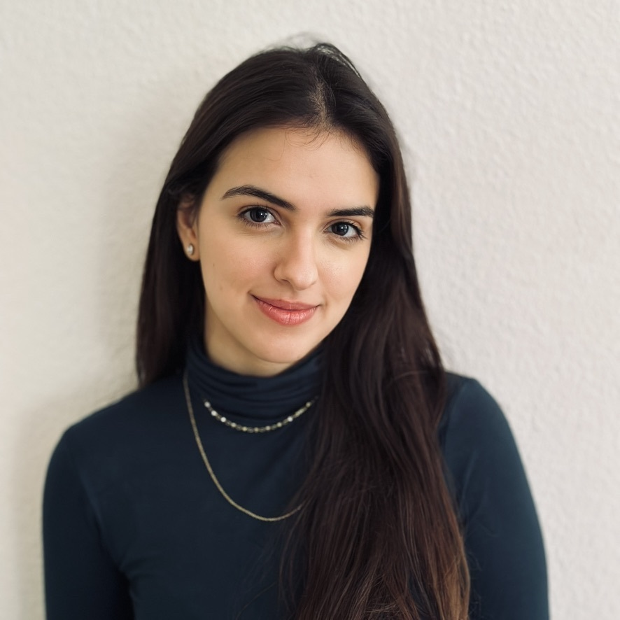
Mylla Marsiglia
PhD candidate, IMPRS and Jacobs foundation
Mylla studies the hippocampus, with a focus on the effects of early life stress (i.e., adverse early life experiences and socioeconomic factors) on the development and functioning of the amygdala and hippocampus.
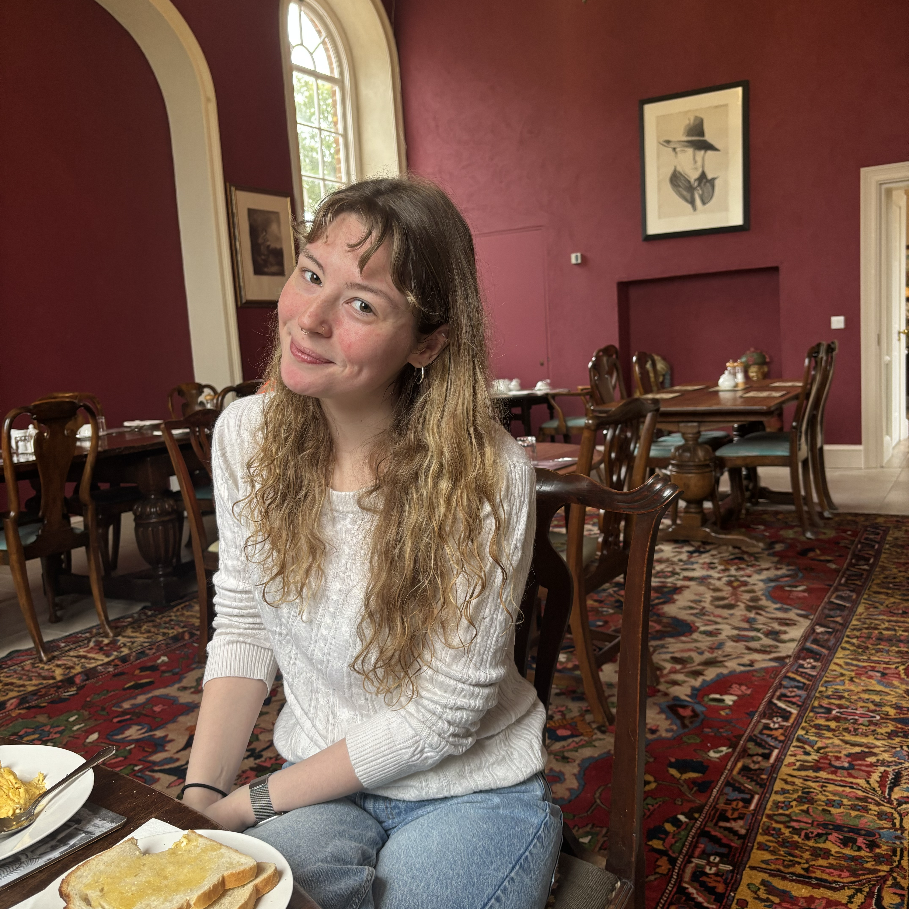
Abigail Zatkalik
PhD candidate, School of Cognition
Abigail works on understanding the difference between language and social cognition in the cerebellum using developmental and evolutionary models.
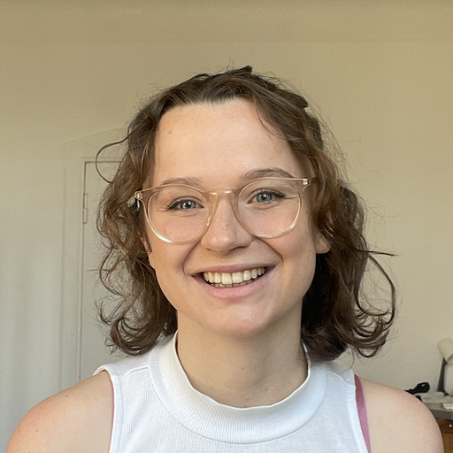
Clara Weber
MD postdoc
Clara is an MD and working on the perinatal period to understand emergence of neurodevelopmental disorder.
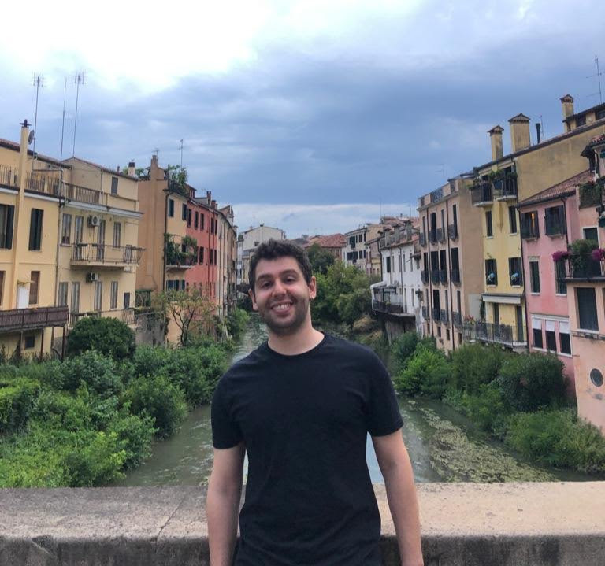
Yiğit Eriguc
PhD candidate, IMPRS
Yiğit is a PhD student at IMPRS CoNI that comes from a psychology/cognitive neuroscience background. He is interested in the relation between cognition and large-scale brain organisation.
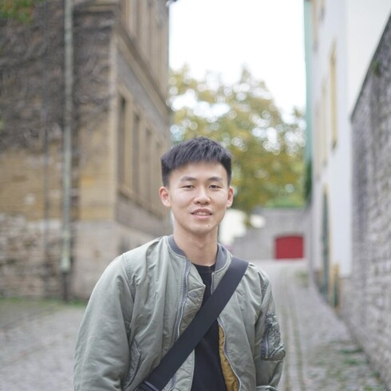
Huantao Wen
PhD candidate, IMPRS
Huantao is a PhD candidate who comes from a background in clinical medicine. He just started his PhD in the lab and is particularly interested in the brain structural, functional and biomarkers organizational patterns during pathological status, and their relation with clinical symptoms and outcomes.
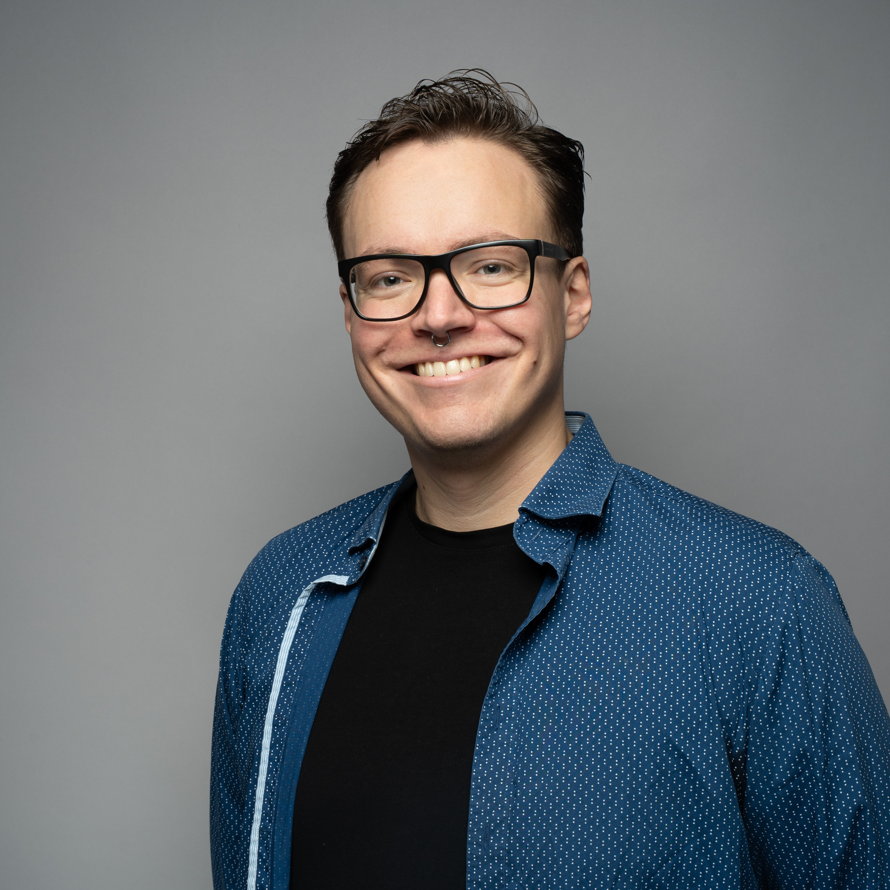
Lorenz Ahle
PhD candidate, IMPRS and HECTOR
Lorenz is a PhD candidate that studies social cognition beyond the cortex.
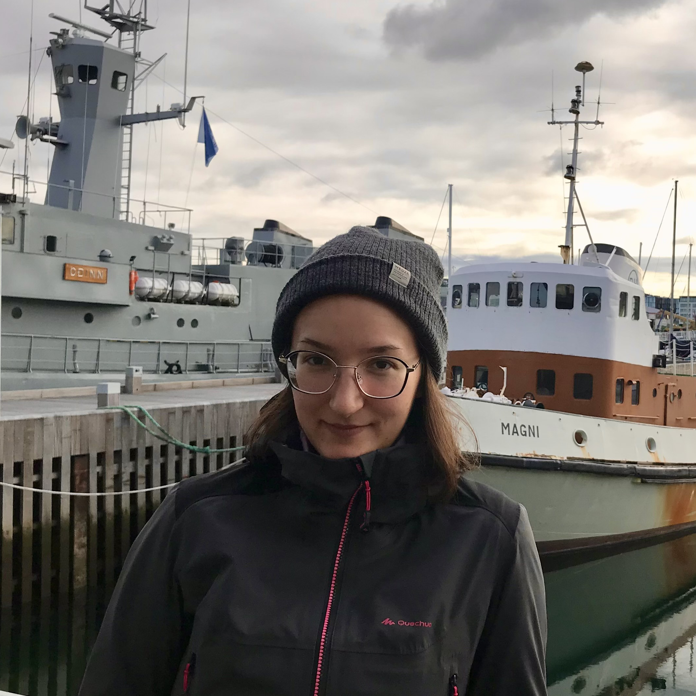
Jessica Royer
Banting postdoc
Jessica is a clinical psychologist by training and works on a project trying to understand the brain basis of social cognition.
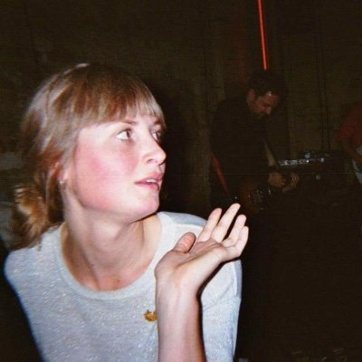
Sofie Valk
Research group leader
Sofie is Lise Meitner research group leader at the MPI in Leipzig, Germany and research group leader at INM-7 Juelich, Juelich, Germany. She is also a Jacobs foundation research fellow.
Satellites and Affiliated Members
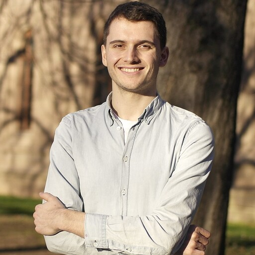
Lars Dinkelbach
clinician scientist
Lars is a developmental neuroendocrinologist and a clinician scientist.
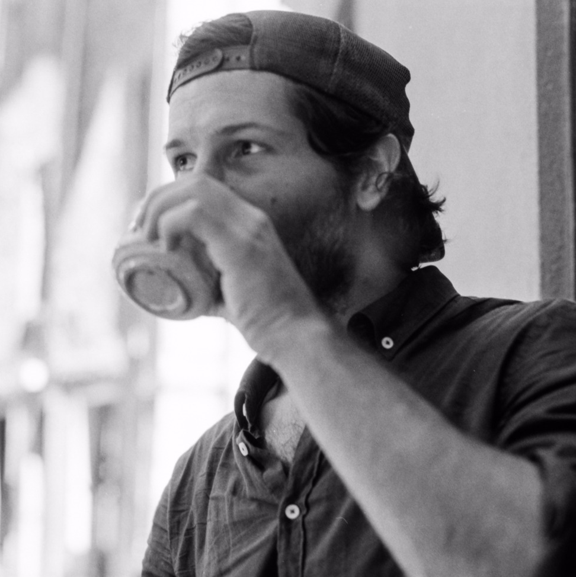
Giacomo Bignardi
PhD guest, School of Cognition
Giaco(mo) was born in the humanities but was raised by scientists. All grown up, he is trying to accept both past, pursuing a PhD on the biological basis of aesthetics with the Max Planck School of Cognition at the Language and Genetics Department of the MPI for psycholinguistics, in Nijmegen, while being a nomadic guest of the Frankfurt and Leipzig MPIs.
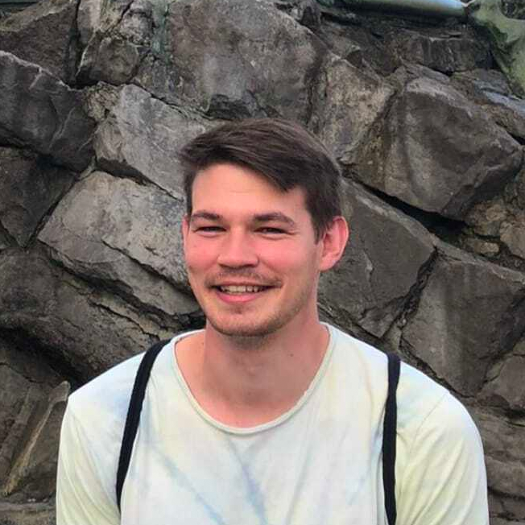
Benjamin Haenisch
affiliated clinician scientist
Ben studies neurotransmitters/receptors and their link to hallmarks of brain function and disease, hoping to better understand the genesis and treatment of psychiatric illnesses.
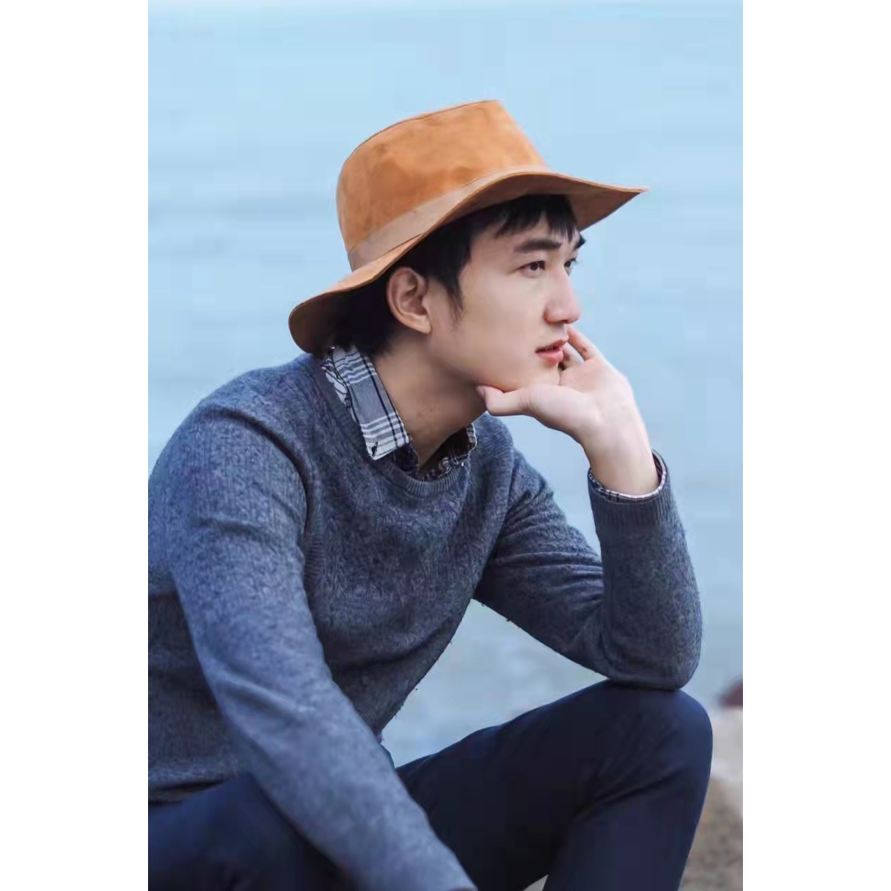
Bin Wan
Postdoc
Bin is currently working in Dr. Matthias Kirschner's lab and is former PhD.
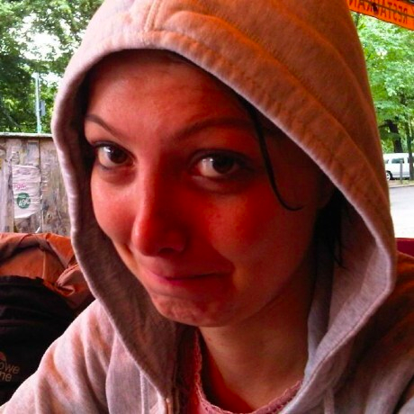
Şeyma Bayrak
MD and affiliated clinician scientist
Şeyma studies the functional and structural organisation of the human brain. She loves big data and computational challenges and recently the functional neurosurgery.
Key Collaborators
Past Members, Visitors and Interns
(Incomplete) list of past members and people interning or visiting the lab since 2020 - let me know if you miss yourself.